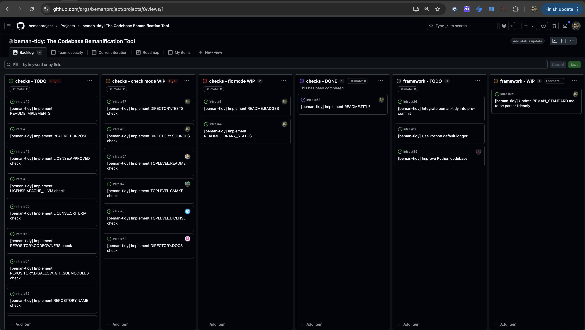

Beman Sofia Hackathon¶

During the ISO WG21 C++ Meeting in Sofia, June 2025, we hosted an in-person Beman - Evening Session — a mix of short presentations, a hands-on hackathon, and plenty of big ideas for the future of C++. What started as a relaxed gathering quickly turned into a productive (and caffeinated) brainstorming hub, where we explored potential C++29 library proposals, shared early-stage experiments, and even wrote code live. It was part workshop, part jam session, and fully in the spirit of what makes the C++ community so unique: collaboration, creativity, and a shared passion for pushing the language forward.
Since November 2024, we have been organizing Beman presentations at ISO WG21 C++ meetings (Warsaw 2024 - Poland, Hagenberg 2025 - Austria). Since we have been receiving positive feedback, we decided to organize another one in Sofia, June 2025 - Bulgaria. (Note that our next session will be at CppCon in September in Colorado - stay tuned for more details!)

We had a great turnout, with 25 participants. The evening started with a great discussion about The Beman Project and where it is going, especially considering the C++26 is closed and the design cycle for C++29 is starting.
We presented our first Production ready. API may undergo changes. library, which is the beman.optional library, hoping to get it into the C++26 standard and become Production ready. Stable API.. We counted a total of 10 Under development and not yet ready for production use. Beman libraries.
We have continued the discussion around our set of guidelines for the Beman libraries, which are described in The Beman Standard. This strong set of rules is a great foundation for our libraries, and it helps the authors to create libraries that are easy to use, maintain, and extend by example, using our awesome beman.exemplar template library.
The second part of the evening was a hackathon with our latest tool beman-tidy: The Codebase Bemanification Tool. For more context, the beman-tidy helps you to apply the Beman Standard to your codebase, at a later stage in the library development.
Since the beman-tidy framework was already ready to use, but still required some work to implement around 40-50 checks, we created the beman-tidy Project on GitHub to track the progress of the implementation and to split the work into smaller tasks.

The implication during the hackathon was substantial, with 10 participants working on the beman-tidy framework, and more pushing PRs at a later point in time. The tool is not completed yet, so feel free to contribute (ping @neatudarius on GitHub, which is the beman-tidy author).
We were very happy with the impact of that evening (Wednesday evening, in the middle of the ISO WG21 C++ Meeting), but surprises continued ...
After Friday's LEWG session, P3655R1: std::zstring_view was presented and got feedback to continue the proposed direction. As an immediate consequence of this event, a new author created the beman.cstring_view library, to pursue the C++29 proposal.
The cherry on the cake was the Saturday's plenary! Lots and lots of great news for Beman folks!
The proposals behind the beman.task, beman.execution and beman.net libraries got accepted in C++26, although significant work remains to make them production ready.
Previously, in Saint Louis June 2024, (P3168R2) Give std::optional Range Support was accepted into the ISO C++ Working Draft, which is one of the two papers implemented in beman.optional. The missing piece was the (P2988R12) std::optional<T&> paper, which was also accepted into the ISO C++ Working Draft. That makes beman.optional require just a little bit more work to get it Production ready. Stable API..
We couldn't be happier with the outcome of this event, and we are looking forward to the next one! Please check out the Beman Project on GitHub or join us on Discourse to get involved!